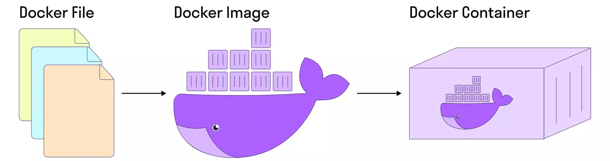

Docker используется для того, чтобы:
- быстро протестировать фикс/фичу локально;
- запустить быстро приложение, на установку и настройку которого уходит много времени;
- запустить автотесты в разных браузерах, используя определенные библиотеки
Два основных понятия в Docker — Docker Image и Docker Container.
Docker Image — набор приложений, библиотек со всеми зависимостями и настройками, из которого разворачивается контейнер.
Docker Image создается на основе Docker-файла, в котором указывается всё необходимое для работы приложения.
Docker Container — работающие приложение, созданное на базе Docker Image
Таким образом, мы берем приложение со всеми его настройками и зависимостями, помещаем в контейнер (ровно так же, как груз).
Переносим его в нужное место (на нужное устройство) и запускаем.
